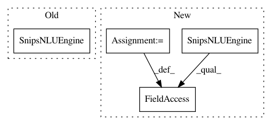

a249db187c104e18d375c7544bacc5dadb9c7438,snips_nlu/tests/test_nlu_engine.py,TestSnipsNLUEngine,test_should_parse_with_builtin_when_no_custom,#TestSnipsNLUEngine#,64
Before Change
builtin_entities = []
mocked_builtin_parser.get_intent.return_value = builtin_intent_result
mocked_builtin_parser.get_slots.return_value = builtin_entities
engine = SnipsNLUEngine([], mocked_builtin_parser)
// When
text = "hello world"
parse = engine.parse(text)
After Change
builtin_entities = []
mocked_builtin_parser.get_intent.return_value = builtin_intent_result
mocked_builtin_parser.get_slots.return_value = builtin_entities
engine = SnipsNLUEngine()
engine.builtin_parser = mocked_builtin_parser
// When
text = "hello world"
parse = engine.parse(text)
In pattern: SUPERPATTERN
Frequency: 3
Non-data size: 4
Instances
Project Name: snipsco/snips-nlu
Commit Name: a249db187c104e18d375c7544bacc5dadb9c7438
Time: 2017-04-03
Author: adrien.ball@snips.net
File Name: snips_nlu/tests/test_nlu_engine.py
Class Name: TestSnipsNLUEngine
Method Name: test_should_parse_with_builtin_when_no_custom
Project Name: snipsco/snips-nlu
Commit Name: a249db187c104e18d375c7544bacc5dadb9c7438
Time: 2017-04-03
Author: adrien.ball@snips.net
File Name: snips_nlu/tests/test_nlu_engine.py
Class Name: TestSnipsNLUEngine
Method Name: test_should_use_parsers_sequentially
Project Name: snipsco/snips-nlu
Commit Name: a249db187c104e18d375c7544bacc5dadb9c7438
Time: 2017-04-03
Author: adrien.ball@snips.net
File Name: snips_nlu/tests/test_nlu_engine.py
Class Name: TestSnipsNLUEngine
Method Name: test_should_parse_with_builtin_when_customs_return_nothing